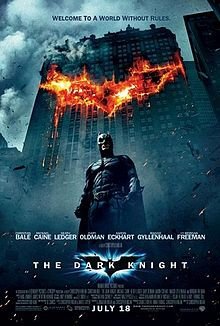
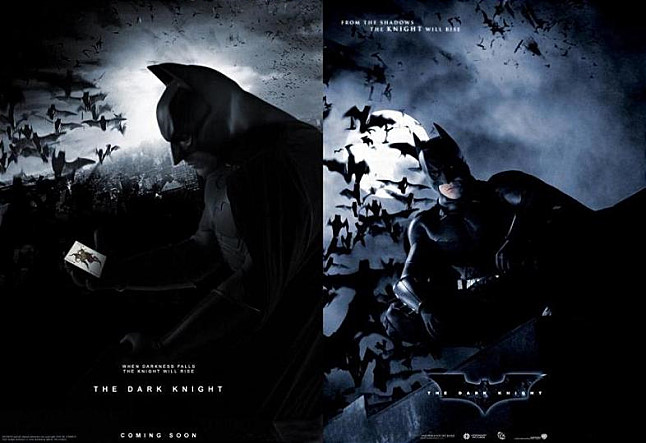

The dark knight(2008)
| 네티즌 평점 | 9.30 |
|---|---|
| 관람객 평점 | 10.00 |
| 기자, 평론가 평점 | 8.70 |
| 개요 | 액션, 범죄, 드라마, 미스터리, 스릴러 |
| 감독 | 크리스토퍼 놀란 |
| 출연 | 크리스찬베일, 히스레저, 아론 에크하트 |
| 미국 | 152분 |
|  |  |
|---|
줄거리
마침내, 최강의 적을 만나다 이 도시에 정의는 죽었다! 범죄와 부정부패를 제거하여 고담시를 지키려는 배트맨(크리스찬 베일). 그는 짐 고든 형사(게리 올드만)와 패기 넘치는 고담시 지방 검사 하비 덴트(아론 에크하트)와 함께 도시를 범죄 조직으로부터 영원히 구원하고자 한다.
배트맨을 죽여라! 세 명의 의기투합으로 위기에 처한 악당들이 모인 자리에 보라색 양복을 입고 얼굴에 짙게 화장을 한 괴이한 존재가 나타나 ‘배트맨을 죽이자’는 사상 초유의 제안을 한다. 그는 바로 어떠한 룰도, 목적도 없는 사상 최악의 악당 미치광이 살인광대 ‘조커’(히스 레저).
마침내 최강의 적을 만나다! 배트맨을 죽이고 고담시를 끝장내버리기 위한 조커의 광기 어린 행각에 도시는 혼란에 빠진다. 조커는 배트맨이 가면을 벗고 정체를 밝히지 않으면 멈추지 않겠다며 점점 배트맨을 조여온다. 한편, 배트맨은 낮엔 기업의 회장으로, 밤에는 가면을 쓴 배트맨으로 밤과 낮의 정체가 다른 자신과 달리 법을 통해 도시를 구원하는 하비 덴트야말로 진정한 영웅이 아닐까 생각하게 된다.
밤의 기사, 그 전설의 서막이 열린다! 조커를 막기 위해 직접 나서 영원히 존재를 감춘 밤의 기사가 될 것인가.